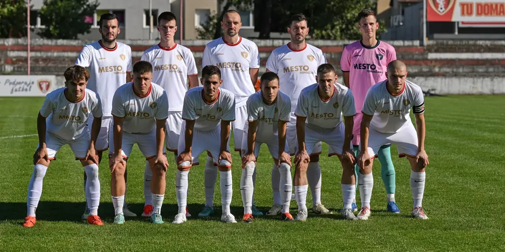

Posledný zápasA-mužstvo
 FC Topoľčanydomáci
FC TopoľčanydomáciVýsledok 2:3
 AFC Nové Mesto nad Váhomhostia
AFC Nové Mesto nad VáhomhostiaPrehrapolčas 1:1
Návrh webu · nie je to oficiálna stránka klubu
IV. liga, 12. miesto zo 16

Posledný zápasA-mužstvo
FC TopoľčanydomáciVýsledok 2:3
AFC Nové Mesto nad VáhomhostiaPrehrapolčas 1:1
6–3–8výhry, remízy a prehry vo všetkých súťažiach, skóre 22:33
IV. liga
| # | Tím | Z | V | R | P | Skóre | B |
|---|---|---|---|---|---|---|---|
| 1 | 15 | 11 | 2 | 2 | 37:11 | 35 | |
| 2 | 15 | 9 | 5 | 1 | 37:15 | 32 | |
| 3 | 15 | 9 | 3 | 3 | 21:11 | 30 | |
| 4 | 15 | 8 | 2 | 5 | 32:28 | 26 | |
| 5 | 15 | 7 | 4 | 4 | 29:19 | 25 | |
| 6 | 15 | 6 | 5 | 4 | 22:16 | 23 | |
| 7 | 15 | 6 | 4 | 5 | 26:24 | 22 | |
| 8 | 15 | 7 | 0 | 8 | 23:20 | 21 | |
| 9 | 15 | 5 | 5 | 5 | 23:24 | 20 | |
| 10 | 15 | 6 | 1 | 8 | 26:28 | 19 | |
| 11 | 15 | 5 | 4 | 6 | 22:19 | 19 | |
| 12 | 15 | 5 | 3 | 7 | 19:26 | 18 | |
| 13 | 15 | 5 | 2 | 8 | 19:25 | 17 | |
| 14 | 15 | 3 | 3 | 9 | 12:29 | 12 | |
| 15 | 15 | 2 | 3 | 10 | 18:45 | 9 | |
| 16 | 15 | 3 | 0 | 12 | 20:46 | 9 |
Hráči, ktorí v kalendárnom roku 2026 nastúpili alebo boli v nominácii na zápas (podľa Sportnetu).